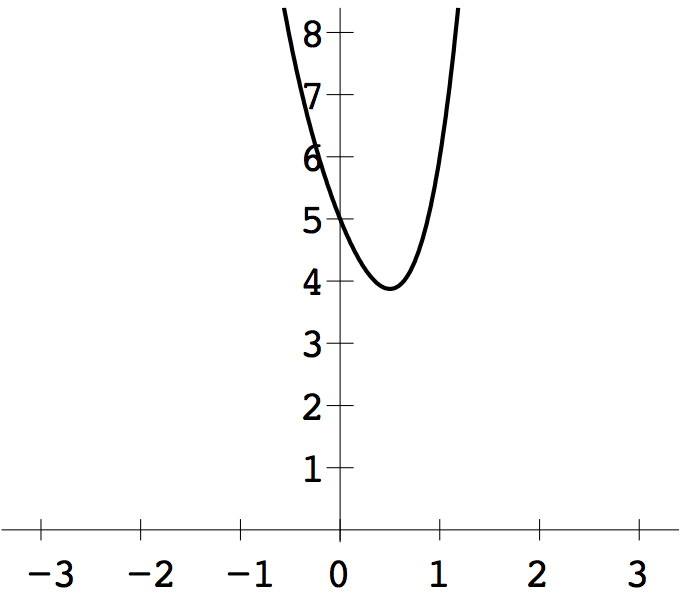
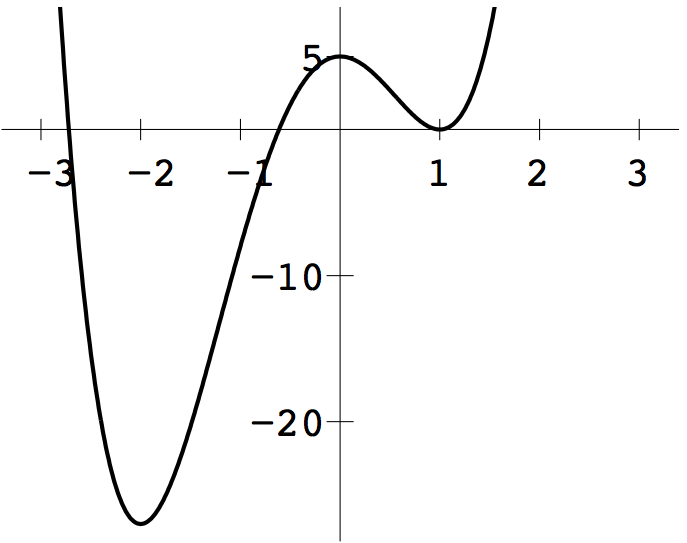
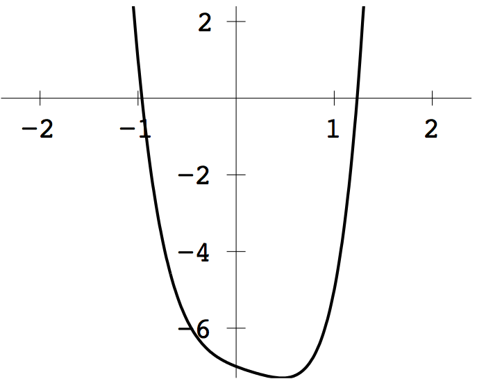
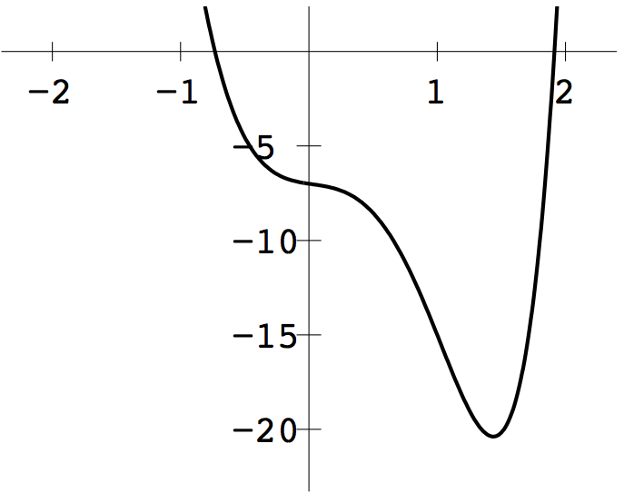

>> x=gss(@(x) 2*x^4+3*x^2-4*x+5,0,1,24)results in convergence to the minimum \(x=1/2\).

1 (b) From the plot below, there are two relative minima. The intervals \([-2.5, -1.5]\) and \([0.5,1.5]\) each contain a minimum. The number of steps needed for each interval is 24, as in (a). The minima \(x=-2\) and \(x=1\) are found by gss.

1 (c) Similar to (a). The interval \([0,1]\) contains a relative minimum. Applying 24 steps of gss gives the approximation \(x=0.47033\).

1 (d) Similar to (a). The interval \([1,2]\) contains a relative minimum. Applying 24 steps of gss provides the approximation \(x=1.43791\).

3 (b) Applying Golden Section Search on the interval \([0,1]\)
>> x=gss(@(x) (x-2)^2+(1/x-3)^2,0,1,30)produces \(x=0.358555\) as in part (a). The nearest point is therefore \((0.358555, 2.788972).\)
x=neldermead(@(x) exp(-x(1)^2*x(2)^2)+(x(1)-1)^2+(x(2)-1)^2,[1;1],1,60)to converge to \((1.20881759,1.20881759)\) within \(8\) decimal places.
x=neldermead(@(x) 100*(x(2)-x(1)^2)^2+(x(1)-1)^2,[0;0],1,100)to converge to \((1,1)\).